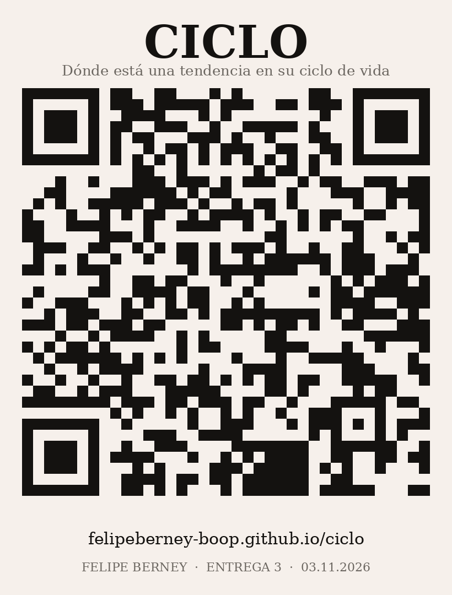

<!doctype html>
<html lang="es">
<head>
<meta charset="utf-8">
<meta name="viewport" content="width=device-width, initial-scale=1">
<meta name="color-scheme" content="light">
<meta name="description" content="CICLO · Making of. Los datos, el system prompt, el prototipo, «Muy IA» y cómo quedó: qué había, qué pasó y cómo quedó.">
<meta name="robots" content="noindex">
<title>CICLO · Making of</title>
<link rel="preconnect" href="https://fonts.googleapis.com">
<link rel="preconnect" href="https://fonts.gstatic.com" crossorigin>
<link href="https://fonts.googleapis.com/css2?family=Inter:wght@300;400;600;700&display=swap" rel="stylesheet">
<style>
/* CICLO · Making of. La misma paleta que la app: negro, crema y blanco. El único color es la señal
   (Entrar, Esperar, Salir), y sólo en la lámina que la explica, siempre con su palabra. */
:root{
  --paper:#F6F0EB; --card:#FFFFFF; --ink:#0E0D0B; --ink-2:#4A4741; --ink-3:#8A857C;
  --rule:#D6CCC2; --rule-2:#E6DED5;
  --entrar:#2C6A3D; --esperar:#9A6200; --salir:#A5372A;
  --serif:"Bodoni Moda",Georgia,serif; --sans:"Archivo",system-ui,sans-serif; --mono:"IBM Plex Mono",ui-monospace,monospace;
  --m:clamp(16px,4.6vw,72px);
}
*{box-sizing:border-box}
[hidden]{display:none!important}
html,body{height:100%;margin:0}
body{background:var(--paper);color:var(--ink);font:16px/1.5 var(--sans);overflow:hidden;-webkit-font-smoothing:antialiased}
button{font:inherit;color:inherit;background:none;border:0;cursor:pointer;padding:0}
:focus-visible{outline:2px solid var(--ink);outline-offset:3px}
a{color:inherit}

/* ── lámina ── */
#deck{position:fixed;inset:0 0 64px 0}
.slide{position:absolute;inset:0;display:grid;grid-template-columns:5fr 7fr;grid-template-rows:auto minmax(0,1fr);
  column-gap:clamp(28px,4vw,72px);padding:clamp(22px,5vh,52px) var(--m) 16px;
  opacity:0;transform:translateX(18px);pointer-events:none;transition:opacity .35s ease,transform .45s cubic-bezier(.2,.7,.2,1)}
.slide.on{opacity:1;transform:none;pointer-events:auto}
.slide.past{transform:translateX(-18px)}
.slide.ancha{grid-template-columns:1fr}
.slide.ancha>.izq{grid-column:1}

/* encabezado: título enorme, bajada en itálica, fecha en mono chiquita */
.enc{grid-column:1/-1;display:grid;grid-template-columns:1fr auto;align-items:end;column-gap:20px;
  padding-bottom:clamp(12px,2.2vh,22px);margin-bottom:clamp(16px,3vh,30px);border-bottom:1px solid var(--ink)}
.enc h2{margin:0;font:400 clamp(34px,4.4vw,64px)/1 var(--serif);letter-spacing:-.02em}
.enc .bajada{margin:8px 0 0;font:italic 400 clamp(17px,1.7vw,24px)/1.2 var(--serif);color:var(--ink-2)}
.enc .fecha{grid-column:2;grid-row:1;align-self:start;margin:0;font:500 11px/1 var(--mono);letter-spacing:.18em;text-transform:uppercase;color:var(--ink-3);white-space:nowrap;padding-top:.6em}

/* columna izquierda: cuerpo y filas de diálogo */
.izq{grid-column:1;grid-row:2;min-height:0;overflow-y:auto;scrollbar-width:none;display:flex;flex-direction:column;gap:clamp(12px,2.2vh,22px)}
.izq::-webkit-scrollbar{display:none}
.cuerpo{margin:0;font:400 clamp(17px,1.45vw,21px)/1.5 var(--sans);color:var(--ink);max-width:34ch}
.slide.ancha .cuerpo{max-width:52ch}
.fila{display:grid;grid-template-columns:96px 1fr;column-gap:16px;align-items:start}
.quien{display:flex;flex-direction:column;align-items:flex-start;gap:6px;padding-top:4px}
.quien b{font:500 10px/1 var(--mono);letter-spacing:.16em;text-transform:uppercase}
.quien small{font:400 10px/1 var(--mono);letter-spacing:.06em;color:var(--ink-3)}
.tipo{display:inline-block;padding:3px 8px 4px;border-radius:999px;font:500 10.5px/1 var(--mono);letter-spacing:.03em;border:1px solid var(--ink)}
.tipo.resultado,.tipo.propuesta{background:var(--ink);color:var(--paper)}
.tipo.devolucion{border-style:dashed}
.tipo.eleccion{background:var(--card)}
.tipo.registro{border-color:var(--ink-3);color:var(--ink-2)}
.fila q{quotes:"«" "»";font:400 clamp(16px,1.3vw,19.5px)/1.42 var(--serif);color:var(--ink)}
.fila.grande q{font-size:clamp(20px,1.85vw,27px);line-height:1.3}
.fila p{margin:0;font-size:clamp(14px,1.05vw,15.5px);line-height:1.55;color:var(--ink-2)}
.fuente{margin:0;font:400 11px/1.4 var(--mono);color:var(--ink-3)}
.fila .fuente{margin-top:6px}

/* columna derecha: imágenes con su pie, o un visual dibujado */
.der{grid-column:2;grid-row:2;position:relative;min-height:0;display:grid;grid-template-rows:minmax(0,1fr) auto;gap:10px}
.der .escena{position:relative;min-height:0}
.der figure{position:absolute;inset:0;margin:0;opacity:0;transition:opacity .3s ease;pointer-events:none}
.der figure.on{opacity:1}
.slide.on .der figure.on{pointer-events:auto} /* sólo la lámina visible recibe clics */
.der img{width:100%;height:100%;object-fit:contain;object-position:center top;border-radius:12px;filter:drop-shadow(0 14px 34px rgba(14,13,11,.16))}
.der .barra{display:grid;grid-template-columns:1fr auto auto auto;align-items:center;gap:12px;min-height:32px}
.der .pie{font:italic 15px/1.3 var(--serif);color:var(--ink-2)}
.der .cuenta{font:500 11px var(--mono);letter-spacing:.12em;color:var(--ink-3);font-variant-numeric:tabular-nums}
.der .flecha{width:32px;height:32px;border-radius:50%;display:grid;place-items:center;border:1px solid var(--rule);font-size:13px}
.der .flecha:hover{border-color:var(--ink)}
.der.una .flecha,.der.una .cuenta{display:none}
.der.dibujo{grid-template-rows:minmax(0,1fr)}
.dib{display:flex;flex-direction:column;justify-content:center;gap:18px;height:100%;min-height:0}
.dib svg{width:100%;height:auto;max-height:100%;overflow:visible}

/* visuales dibujados */
.cifras{display:grid;grid-template-columns:repeat(var(--n,3),1fr);gap:clamp(16px,2.6vw,40px)}
.cifra{border-top:1px solid var(--ink);padding-top:12px}
.cifra .n{display:block;font:400 clamp(40px,4.8vw,76px)/1 var(--serif);letter-spacing:-.02em}
.cifra .t{display:block;margin-top:10px;font-size:clamp(14px,1.1vw,16px);line-height:1.45;color:var(--ink-2)}
.cifra .t b{color:var(--ink);font-weight:600}
.pista{position:relative;margin:30px 6px 0}
.pista .linea{height:1px;background:var(--ink)}
.pista ol{list-style:none;margin:0;padding:0;display:grid;grid-template-columns:repeat(5,1fr)}
.pista li{position:relative;padding-top:22px;font:400 clamp(18px,1.6vw,24px)/1.1 var(--serif)}
.pista li::before{content:"";position:absolute;top:-6px;left:0;width:11px;height:11px;border-radius:50%;background:var(--paper);border:1px solid var(--ink)}
.pista li.aca::before{background:var(--ink)}
.pista li small{display:block;margin-top:8px;font:400 13px/1.4 var(--sans);color:var(--ink-2)}
.tarjetas{display:grid;grid-template-columns:repeat(var(--n,3),1fr);gap:clamp(12px,1.6vw,24px)}
.tarjeta{background:var(--card);border:1px solid var(--rule);border-radius:14px;padding:clamp(16px,1.8vw,26px);display:flex;flex-direction:column;gap:10px}
.tarjeta .num{font:500 11px/1 var(--mono);letter-spacing:.16em;color:var(--ink-3)}
.tarjeta h3{margin:0;font:400 clamp(22px,2vw,30px)/1.05 var(--serif)}
.tarjeta p{margin:0;font-size:clamp(14px,1.05vw,15.5px);line-height:1.5;color:var(--ink-2)}
.tarjeta .cuando{margin-top:auto;font:500 10.5px/1 var(--mono);letter-spacing:.16em;text-transform:uppercase;color:var(--ink-3)}
.tarjeta.ir{cursor:pointer;transition:transform .18s ease,box-shadow .18s ease}
.tarjeta.ir:hover{transform:translateY(-2px);box-shadow:0 14px 34px -18px rgba(14,13,11,.32)}
.metodos{list-style:none;margin:0;padding:0;display:grid;gap:10px}
.metodos li{display:grid;grid-template-columns:1fr auto;align-items:baseline;gap:16px;padding:14px 18px;background:var(--card);border:1px solid var(--rule);border-radius:10px;font:400 clamp(17px,1.4vw,20px)/1.3 var(--serif)}
.metodos li span{font:500 11px/1 var(--mono);letter-spacing:.14em;text-transform:uppercase;color:var(--ink-3)}
.metodos li.base{background:none;border-style:dashed}
.senales{display:flex;flex-direction:column;gap:12px}
.sen{display:grid;grid-template-columns:auto 1fr;align-items:center;gap:18px;padding:16px 20px;border:1px solid var(--rule);border-radius:12px;background:var(--card)}
.sen b{font:400 clamp(26px,2.4vw,36px)/1 var(--serif)}
.sen.e b{color:var(--entrar)}.sen.w b{color:var(--esperar)}.sen.s b{color:var(--salir)}
.sen span{font-size:15px;color:var(--ink-2)}
.proc{display:flex;gap:22px;flex-wrap:wrap;margin-top:6px;font:500 12px/1 var(--mono);letter-spacing:.06em;color:var(--ink-2)}
.proc span{padding:7px 12px;border:1px solid var(--ink);border-radius:999px}
.proc span.i{border-style:dashed}.proc span.p{border-color:var(--ink-3)}
.pasos{display:grid;grid-template-columns:repeat(4,1fr);gap:clamp(12px,1.6vw,22px)}
.paso{border-top:1px solid var(--ink);padding-top:14px}
.paso .n{font:400 clamp(44px,4.2vw,64px)/1 var(--serif)}
.paso h3{margin:10px 0 6px;font:500 clamp(17px,1.4vw,20px)/1.2 var(--sans)}
.paso p{margin:0;font-size:clamp(14px,1.05vw,15.5px);line-height:1.5;color:var(--ink-2)}
.flujo{display:grid;grid-template-columns:1fr auto 1fr auto 1fr auto 1fr;align-items:center;gap:10px}
.flujo .caja{background:var(--card);border:1px solid var(--rule);border-radius:14px;padding:16px;min-height:150px}
.flujo .caja.pub{border-color:var(--ink)}
.flujo .caja b{display:block;font:400 clamp(19px,1.6vw,24px)/1.1 var(--serif);margin-bottom:8px}
.flujo .caja p{margin:0;font-size:14px;line-height:1.45;color:var(--ink-2)}
.flujo .caja small{display:block;font:500 10px/1 var(--mono);letter-spacing:.16em;text-transform:uppercase;color:var(--ink-3);margin-bottom:10px}
.flujo i{font-style:normal;font-size:20px;color:var(--ink-3)}
.grande-url{font:400 clamp(28px,3.6vw,54px)/1.05 var(--serif);letter-spacing:-.01em;word-break:break-word}
.lista-demo{list-style:none;margin:0;padding:0;display:grid;gap:10px;counter-reset:d}
.lista-demo li{counter-increment:d;display:grid;grid-template-columns:44px 1fr auto;align-items:baseline;gap:12px;padding:14px 0;border-top:1px solid var(--rule);font:400 clamp(18px,1.6vw,24px)/1.2 var(--serif)}
.lista-demo li::before{content:counter(d,decimal-leading-zero);font:500 12px/1 var(--mono);letter-spacing:.12em;color:var(--ink-3)}
.lista-demo li span{font:500 11px/1 var(--mono);letter-spacing:.1em;color:var(--ink-3)}

/* portada y cierre */
.slide.portada{grid-template-columns:5fr 7fr;grid-template-rows:1fr}
.portada .izq{grid-row:1;justify-content:flex-end;gap:0;overflow:visible}
.portada h1{margin:0;font:400 clamp(88px,12vw,190px)/.84 var(--serif);letter-spacing:.06em}
.portada .bajada{margin:16px 0 0 .06em;font:italic 400 clamp(26px,2.8vw,44px)/1 var(--serif);color:var(--ink-2)}
.portada .firma{display:flex;flex-direction:column;gap:7px;margin:clamp(32px,7vh,80px) 0 0 .12em;font:500 10.5px/1 var(--mono);letter-spacing:.22em;text-transform:uppercase;color:var(--ink-2)}
.portada .firma span+span{color:var(--ink-3)}
.portada .der{grid-row:1}
.portada .der img{object-position:center}

/* navegación de abajo: secciones con un punto por lámina */
#nav{position:fixed;left:0;right:0;bottom:0;height:64px;display:flex;align-items:center;gap:clamp(10px,1.6vw,26px);padding:0 var(--m);border-top:1px solid var(--rule);background:var(--paper);overflow-x:auto;scrollbar-width:none}
#nav::-webkit-scrollbar{display:none}
.sec{display:flex;flex-direction:column;gap:7px;flex:none}
.sec>button{font:500 10px/1 var(--mono);letter-spacing:.14em;text-transform:uppercase;color:var(--ink-3);text-align:left;white-space:nowrap}
.sec.on>button{color:var(--ink)}
.puntos{display:flex;gap:4px}
.puntos button{width:16px;height:3px;background:var(--rule)}
.puntos button.on{background:var(--ink)}
.puntos button:hover{background:var(--ink-3)}
#num{margin-left:auto;flex:none;font:500 11px var(--mono);letter-spacing:.12em;color:var(--ink-3);font-variant-numeric:tabular-nums}

/* notas del orador: tecla N */
#notas{position:fixed;right:16px;bottom:76px;width:min(460px,calc(100vw - 32px));max-height:42vh;overflow:auto;z-index:20;
  background:var(--card);border:1px solid var(--ink);border-radius:14px;padding:16px 18px;font-size:14.5px;line-height:1.55;color:var(--ink-2);box-shadow:0 14px 34px -18px rgba(14,13,11,.32)}
#notas b{display:block;font:500 10px/1 var(--mono);letter-spacing:.16em;text-transform:uppercase;color:var(--ink);margin-bottom:8px}
#ayuda{margin-left:auto;flex:none;font:500 10px/1 var(--mono);letter-spacing:.12em;color:var(--ink-3);white-space:nowrap}
#ayuda+#num{margin-left:0}

/* zoom de imagen */
#zoom{position:fixed;inset:0;z-index:30;background:rgba(246,240,235,.97);display:grid;place-items:center;padding:3vh 3vw;cursor:zoom-out}
#zoom img{max-width:100%;max-height:100%;border-radius:10px;box-shadow:0 20px 60px -20px rgba(14,13,11,.4)}

/* celular: una columna, la lámina se desliza */
@media (max-width:820px){
  .slide,.slide.portada{grid-template-columns:1fr;grid-template-rows:auto auto auto;overflow-y:auto;padding:20px 16px 24px;align-content:start}
  .izq,.der,.portada .izq,.portada .der{grid-column:1;grid-row:auto;overflow:visible}
  .der{min-height:260px;margin-top:18px}
  .der.dibujo{min-height:0}
  .der .escena{height:min(56vw,320px)}
  .cifras,.tarjetas,.pasos{grid-template-columns:1fr}
  .flujo{grid-template-columns:1fr}.flujo i{transform:rotate(90deg);justify-self:center}
  .pista ol{grid-template-columns:1fr;gap:10px}.pista .linea{display:none}.pista li{padding:0 0 0 22px}.pista li::before{top:4px}
  .fila{grid-template-columns:78px 1fr}
  .cuerpo{max-width:none}
  #ayuda{display:none}
  .portada h1{font-size:clamp(64px,22vw,120px)}
  .demo-g{grid-template-columns:1fr!important}.grande-url{font-size:30px;word-break:normal}
}
@media (prefers-reduced-motion:reduce){.slide,.der figure{transition:none}}

/* ── estilo de página de producto (27/10), el mismo de la app: tipografía del sistema, blanco y gris perla,
   tarjetas de 18 px, nada en mayúsculas espaciadas; el azul sólo en la navegación. ── */
:root{--sf:-apple-system,BlinkMacSystemFont,"SF Pro Display","SF Pro Text","Inter",system-ui,sans-serif;
  --serif:var(--sf);--sans:var(--sf);--mono:var(--sf);
  --paper:#ffffff;--card:#f5f5f7;--ink:#1d1d1f;--ink-2:#424245;--ink-3:#86868b;--rule:#e0e0e0;--rule-2:#f0f0f0;--azul:#0066cc}
body{letter-spacing:-.022em}
*{text-transform:none!important}
.enc{border-bottom:0;padding-bottom:6px}
.enc h2{font-weight:600;letter-spacing:-.03em;font-size:clamp(36px,4.4vw,64px)}
.enc .bajada{font-style:normal;font-weight:400;color:var(--ink-3)}
.enc .fecha,.quien b,.quien small,.tipo,.cuenta,.tarjeta .num,.tarjeta .cuando,.metodos li span,.flujo .caja small,.sec>button,#num,#ayuda,.fuente,.lista-demo li span,.lista-demo li::before,.portada .firma{letter-spacing:-.005em!important}
.enc .fecha{font-size:13px;font-weight:400}
.quien b{font-size:12px;font-weight:600}
.tipo{font-size:12px;font-weight:400;padding:3px 9px 4px}
.fila q{font-weight:300;letter-spacing:-.015em;font-size:clamp(17px,1.4vw,21px)}
.fila.grande q{font-weight:300;font-size:clamp(22px,2vw,30px)}
.cifra{border-top:0}.cifra .n{font-weight:600;letter-spacing:-.03em}
.paso{border-top:0}.paso .n{font-weight:600;color:var(--azul)}
.tarjeta,.metodos li,.sen,.flujo .caja{background:var(--card);border:0}
.tarjeta h3,.flujo .caja b,.metodos li,.lista-demo li,.grande-url,.pista li{font-weight:600;letter-spacing:-.02em}
.metodos li.base{background:none;border:1px dashed var(--rule)}
.sen b{font-weight:600}
.flujo .caja.pub{box-shadow:inset 0 0 0 2px var(--azul)}
.der img{border-radius:18px;filter:drop-shadow(3px 5px 30px rgba(0,0,0,.22))}
.der .pie{font-style:normal;font-size:14px;color:var(--ink-3)}
.portada h1{font-weight:600;letter-spacing:.06em}
.portada .bajada{font-style:normal;font-weight:300;color:var(--ink-3)}
.portada .firma{font-size:13px;font-weight:400}
.sec>button{font-size:12px}.sec.on>button{color:var(--ink);font-weight:600}
.puntos button.on{background:var(--azul)}
#nav{background:color-mix(in srgb,#fff 82%,transparent);-webkit-backdrop-filter:blur(14px);backdrop-filter:blur(14px)}
#notas{border:0;background:var(--card);box-shadow:none}
.pista .linea{background:var(--rule)}.pista li::before{border-color:var(--ink-3)}

/* ── 16/11, noche: el giro. Antes · qué pasó · después, enfrentados ── */
.giro{grid-column:1/-1;grid-row:2;min-height:0;display:grid;grid-template-columns:minmax(0,1fr) minmax(250px,.58fr) minmax(0,1fr);grid-template-rows:minmax(0,1fr) auto;gap:14px clamp(18px,2.4vw,40px)}
.giro .lado,.giro .medio{min-height:0;display:flex;flex-direction:column;gap:12px}
.giro .et{margin:0;font-size:15px;color:var(--ink-3)}.giro .et b{color:var(--ink);font-weight:600;margin-right:6px}
.giro .despues .et b{color:var(--azul)}
.giro .escena{position:relative;flex:1;min-height:0}
.giro figure{position:absolute;inset:0;margin:0;opacity:0;transition:opacity .3s ease;pointer-events:none}
.giro figure.on{opacity:1}.slide.on .giro figure.on{pointer-events:auto}
.giro .escena img{width:100%;height:100%;object-fit:contain;object-position:center top;border-radius:14px;cursor:zoom-in;filter:drop-shadow(3px 5px 24px rgba(0,0,0,.18))}
.giro .antes .escena img{filter:grayscale(.15) drop-shadow(3px 5px 24px rgba(0,0,0,.12))}
.giro .html{height:100%;overflow-y:auto;scrollbar-width:thin}
.giro .html .prompt{max-height:none;font-size:11.5px;margin-top:4px}
.giro .medio{overflow-y:auto;scrollbar-width:none;padding-top:0}
.giro .medio::-webkit-scrollbar{display:none}
.giro .medio .fila{grid-template-columns:76px 1fr;column-gap:12px}
.giro .resp{gap:10px}.giro .resp .par{grid-template-columns:1fr}.giro .resp .q{font-size:15px}
.giro .resp .par p{font-size:15px}.giro .antes .resp .par{opacity:1;color:var(--ink-2)}
.giro .medio .fila q{font-size:clamp(15px,1.15vw,17.5px);line-height:1.4}
.giro .medio .fila.grande q{font-size:clamp(17px,1.4vw,21px);line-height:1.32}
.giro .medio .fila p{font-size:14px;line-height:1.45}
.giro .ref{position:static;opacity:1;pointer-events:auto;margin:4px 0 0;display:grid;gap:6px}
.giro .ref img{width:100%;max-height:160px;object-fit:cover;object-position:top;border-radius:12px;cursor:zoom-in}
.giro .ref figcaption{font-size:13px;color:var(--ink-3)}
.gbarra{grid-column:1/-1;display:grid;grid-template-columns:1fr auto auto auto;align-items:center;gap:12px;min-height:32px}
.gbarra .pie{font-size:15px;color:var(--ink-2)}
.gbarra .cuenta{font-size:12px;color:var(--ink-3);font-variant-numeric:tabular-nums}
.gbarra .flecha{width:32px;height:32px;border-radius:50%;display:grid;place-items:center;border:1px solid var(--rule);font-size:13px}
.gbarra .flecha:hover{border-color:var(--azul);color:var(--azul)}
@media (max-width:900px){
  .giro{display:flex;flex-direction:column;gap:18px}
  .giro>*{flex:none;min-height:auto!important}
  .giro .escena{flex:none;height:min(62vw,360px)}
  .giro .html{height:auto;max-height:70vh}
  .giro .escena:has(.html){height:auto}
  .giro .medio{order:-1;overflow:visible}
  .slide.con-giro{overflow-y:auto}
}
@media print{
  body{overflow:visible}#deck{position:static}#nav,#ayuda,#notas{display:none!important}
  .slide{position:relative;inset:auto;opacity:1;transform:none;height:100vh;page-break-after:always;break-after:page}
  .der figure,.giro figure{opacity:0}.der figure:first-child,.giro figure:first-child{opacity:1}
}

/* ── 16/11: el lienzo de la app de hoy (gris perla, tarjetas blancas) y las piezas nuevas ── */
:root{--paper:#f5f5f7;--card:#ffffff;--entrar:#1d7a3a;--esperar:#a05a00;--salir:#c0392b}
.tarjeta,.metodos li,.sen,.flujo .caja{background:var(--card)}
.s-e{color:var(--entrar);font-style:normal;font-weight:600}.s-w{color:var(--esperar);font-style:normal;font-weight:600}.s-s{color:var(--salir);font-style:normal;font-weight:600}
.rot{display:block;font:400 13px/1.2 var(--sf);color:var(--ink-3);margin-bottom:10px}
.fl{font-style:normal;color:var(--ink-3);font-size:22px;align-self:center}
.cruce{display:grid;grid-template-columns:1fr auto 1fr auto 1fr;gap:clamp(10px,1.6vw,22px);align-items:stretch}
.cruce .col{display:flex;flex-direction:column;gap:12px}
.cruce .fu{background:var(--card);border-radius:18px;padding:clamp(14px,1.6vw,22px);display:flex;flex-direction:column;gap:6px;flex:1}
.cruce .fu b{font:600 clamp(20px,1.8vw,26px)/1.1 var(--sf);letter-spacing:-.02em}
.cruce .fu span{font-size:clamp(14px,1.05vw,16px);color:var(--ink-2);line-height:1.4}
.cruce .fu em{font-style:normal;font-size:14px;color:var(--ink-3);margin-top:auto}
.cruce .fu.llave{justify-content:center;box-shadow:inset 0 0 0 2px var(--ink)}
.cruce .valida{grid-column:1/-1;display:flex;flex-wrap:wrap;gap:10px;align-items:center;border:1px dashed var(--ink-3);border-radius:18px;padding:14px 18px;margin-top:6px}
.cruce .valida .rot{margin:0 8px 0 0;flex-basis:100%}
.cruce .valida span:not(.rot){padding:6px 12px;border-radius:999px;border:1px solid var(--rule);font-size:14px;color:var(--ink-2)}
.ficha{background:var(--card);border-radius:18px;padding:18px 20px;display:flex;flex-direction:column;gap:10px;max-width:440px}
.ficha .fh{display:flex;justify-content:space-between;gap:12px;align-items:baseline;flex-wrap:wrap}
.ficha .fh b{font-weight:600}.ficha .fh span{color:var(--ink-2);font-size:15px}
.ficha .fh.fin{border-top:1px solid var(--rule);padding-top:10px}.ficha .fh small{flex-basis:100%;color:var(--ink-3);font-size:13px}
.ficha dl{display:grid;grid-template-columns:auto 1fr;gap:4px 14px;margin:0;font-size:14px}
.ficha dt{color:var(--ink-3)}.ficha dd{margin:0;color:var(--ink-2)}
.proc3{display:grid;gap:14px}
.proc3>div{background:var(--card);border-radius:18px;padding:18px 22px;display:grid;grid-template-columns:1fr 160px;gap:4px 20px;align-items:center}
.proc3 b{font:600 clamp(20px,1.7vw,24px)/1.1 var(--sf);grid-column:1}
.proc3 p{margin:0;grid-column:1;color:var(--ink-2);font-size:15px}
.proc3 svg{grid-column:2;grid-row:1/3;width:100%}
.ida{display:grid;grid-template-columns:1.3fr auto .8fr auto 1.1fr;gap:clamp(10px,1.4vw,20px);align-items:stretch}
.ida .caja{background:var(--card);border-radius:18px;padding:clamp(16px,1.6vw,24px);display:flex;flex-direction:column;gap:10px}
.ida .caja b{font:600 clamp(18px,1.5vw,22px)/1.2 var(--sf);letter-spacing:-.02em}
.ida .caja p,.ida .caja li{margin:0;font-size:15px;color:var(--ink-2);line-height:1.45}
.ida .caja ul{margin:0;padding-left:18px;display:grid;gap:6px}.ida .caja li b{font-size:15px}
.ida code{display:block;font:12.5px/1.5 ui-monospace,Menlo,monospace;background:var(--paper);border-radius:10px;padding:10px 12px;color:var(--ink-2);white-space:normal}
.ida small{color:var(--ink-3);font-size:13px;margin-top:auto}
.ida .regla{grid-column:1/-1;margin:6px 0 0;font:600 clamp(18px,1.5vw,22px)/1.3 var(--sf);letter-spacing:-.02em}
.prompt{margin:0;background:var(--card);border-radius:18px;padding:clamp(16px,2vw,28px);font:13px/1.55 ui-monospace,Menlo,monospace;color:var(--ink-3);white-space:pre-wrap;overflow:auto;max-height:calc(100vh - 300px)}
.prompt mark{background:none;color:var(--ink);font-weight:600}
.resp{display:grid;gap:14px}
.resp .q{margin:0;justify-self:end;background:var(--card);border-radius:18px 18px 4px 18px;padding:12px 18px;font-size:17px}
.resp .par{display:grid;grid-template-columns:40px 1fr;gap:14px;background:var(--card);border-radius:18px;padding:16px 20px}
.resp .par:not(.si){opacity:.6}
.resp .v{font-weight:600;color:var(--ink-3)}
.resp .par p{margin:0;font-size:16px;line-height:1.5}.resp .par span{color:var(--ink-2)}.resp .par small{color:var(--ink-3);font-size:14px}
.links{display:grid;grid-template-columns:1fr 1fr 1fr auto;gap:clamp(12px,1.6vw,24px);align-items:stretch}
.links a{background:var(--card);border-radius:18px;padding:clamp(18px,2vw,28px);text-decoration:none;display:flex;flex-direction:column;gap:10px}
.links a span{color:var(--ink-3);font-size:15px}.links a b{color:var(--azul);font-weight:600;font-size:clamp(17px,1.4vw,21px);overflow-wrap:anywhere}
.links a:hover b{text-decoration:underline}
.links .qr{width:clamp(120px,12vw,180px);border-radius:18px;background:#fff;padding:10px}
@media (max-width:900px){
  .cruce,.ida{grid-template-columns:1fr}.cruce .fl,.ida .fl{transform:rotate(90deg);justify-self:center}
  .dib{height:auto;justify-content:flex-start}.prompt{max-height:60vh}
  .proc3 svg{max-width:220px}
  .links{grid-template-columns:1fr}.proc3>div{grid-template-columns:1fr}.proc3 svg{grid-column:1;grid-row:auto}
}

</style>
</head>
<body>
<main id="deck" aria-live="polite"></main>
<nav id="nav" aria-label="Secciones"></nav>
<aside id="notas" hidden></aside>
<div id="zoom" hidden></div>

<script>
/* ════════════════════════════════════════════════════════════════════════════════════════════
   CICLO · Making of, versión corta (16/11/2026; rehecha la misma noche). Apoyo para una demo de 10
   minutos: los datos, el system prompt, el prototipo, «Muy IA», cómo quedó y los links.
   Cada lámina, salvo la de los datos y los links, es un giro: qué había → qué pasó → cómo quedó, con
   el antes y el después enfrentados (giro:{pares:[{a,fa,d,fd,p}], paso:[filas]}).
   Base: diseno/prototipos/versiones_de_la_presentacion/presentacion_2026-11-16_7fa00bc_making_of_corto.html

   Citas: textuales, de las conversaciones en Claude Code y de las devoluciones, con la ortografía
   corregida y las palabras y el tono intactos; «(…)» marca un corte. Lo que no tiene cita textual va
   como texto (t:), nunca entre comillas.
   Fila: {q:'Felipe', k:'pedido', f:'13/10', c:'cita'}  ·  {q:'Claude', k:'resultado', t:'texto'}
   Tipos: pedido · devolucion · eleccion · propuesta · resultado · registro
   ════════════════════════════════════════════════════════════════════════════════════════════ */
const LAMINAS=[
/* ── Los datos ────────────────────────────────────────────────────────────── */
{id:'datos',sec:'Los datos',titulo:'Dos fuentes entran, cuatro comprueban',bajada:'Qué datos, para qué y cómo conviven',ancha:true,
 dib:'cruce',
 notas:'La pasarela dice qué propone la industria; la búsqueda, qué quiere la gente. Se cruzan por atributo y año, y el K-means junta los que se mueven parecido. Reddit, Google Shopping, Amazon y Lyst no entran al modelo: sirven para ver si lo que dice coincide con afuera. Fuentes, fechas de descarga y licencias: datasets/fuentes_y_descargas.md.'},

/* ── El system prompt: había → pasó → quedó ───────────────────────────────── */
{id:'prompt',sec:'La IA',titulo:'El system prompt',bajada:'Primero la respuesta',
 giro:{
  antes:{f:'27 oct · prompt v5',html:'v5'},
  paso:[
   {q:'Cristian',k:'devolucion',f:'03/11',c:'Como usuario, tengo que leer muchas cosas que no aportan valor por igual.',g:true},
   {q:'Claude',k:'resultado',t:'Reescribe el prompt: una conclusión de 20 palabras, un número que la sostiene y, al final, lo que falta.'}],
  despues:{f:'10 nov · prompt v7, hoy v9',html:'v9'}},
 notas:'La misma pregunta, el mismo perfil (high fashion, para una marca, mujer), respuestas reales sin editar: datasets/pruebas/asistente_v5_respuestas.md (27/10) y asistente_v7_respuestas.md (10/11). La v9 conserva ese formato y agrega: empezar por lo que sí hay, el puente a un pariente cuando no hay serie, y las marcas sin cruzar el corte de Lyst en Q1-26. Las nueve versiones están en prompts/, ninguna se sobreescribe.'},

/* ── El prototipo original ────────────────────────────────────────────────── */
{id:'prototipo',sec:'Del diseño al código',titulo:'El prototipo original',bajada:'Lo que sabe el taller',
 giro:{
  pares:[
   {a:'figma_original_radar',fa:'5 oct · Figma',d:'tarjetas_hoy',fd:'Hoy',p:'La etapa ya era un punto en una pista. Eso pasó entero del Figma a la app.'},
   {a:'cortes_20-10',fa:'20 oct · en código',d:'cortes_hoy',fd:'Hoy',p:'«Jeans» era una prenda y «mom» un corte más. Hoy: pantalón, los diez cortes de la industria, y el denim como material.'},
   {a:'materiales_20-10',fa:'20 oct · en código',d:'materiales_hoy',fd:'Hoy',p:'Un pantalón abría con «Jersey de algodón». Hoy cada prenda muestra sólo sus materiales, con el nombre de taller.'}],
  paso:[
   {q:'Claude',k:'propuesta',t:'Pasa el prototipo a código y arma la taxonomía con nombres de manual.'},
   {q:'Felipe',k:'devolucion',f:'20/10',c:'La raíz del problema es que jean no es una prenda: es un material. (…) Sacá «mom jeans» y «boyfriend». Mapealos a lo que son por corte + tiro + fit.'},
   {q:'Felipe',k:'devolucion',f:'20/10',c:'El jersey es tela de remera, no de pantalón. (…) Si un diseñador no puede decir el nombre en voz alta en un taller y que le entiendan, no va en la interfaz.',g:true}]},
 notas:'El Figma (5/10, figma.com/design/zpHKE7YQLBRXJPcbyrb37I) dejó las vistas, la etapa como posición en una pista y la paleta de cada prenda; la app se escribió en código, no leyendo el Figma. Las dos correcciones son del 20/10: jean pasa a material (short de jean = short + denim), mom y boyfriend dejan de ser cortes y quedan como alias de búsqueda, y MATERIAL_POR_PRENDA filtra qué material se ofrece en cada prenda (el jersey, sólo en remeras y vestidos). Los «antes» son las versiones guardadas en diseno/prototipos/versiones_de_la_app/.'},

/* ── «Muy IA» ─────────────────────────────────────────────────────────────── */
{id:'apple',sec:'Del diseño al código',titulo:'«Muy IA»',bajada:'La devolución y la referencia',
 giro:{
  pares:[{a:'revista_27-10',fa:'27 oct · la revista',d:'tendencias_hoy',fd:'Hoy',p:'La misma pantalla, Tendencias, antes y después de la referencia.'}],
  paso:[
   {q:'Iván',k:'devolucion',f:'27/10',t:'Se ve «muy IA». Muestra una página donde se descarga la estética de cualquier marca.'},
   {q:'Felipe',k:'eleccion',f:'27/10',c:'Decidí la de Apple porque me encanta. (…) Como si Apple vendiese ropa y un software de hacer ropa encontrando tendencias, que es lo que es CICLO.',g:true},
   {q:'Claude',k:'resultado',t:'Toma el sistema, no la marca: la letra del sistema, el gris perla, tarjetas blancas y un solo azul, que significa «se toca».'}],
  ref:{s:'referencia_apple',p:'La referencia: el DESIGN.md de Apple, en shadcn.io'}},
 notas:'Antes hubo tres variantes (revista, revista suave y estudio) que no convencieron. Se tomó la tipografía del sistema, el gris perla, las tarjetas blancas de 18 px, las píldoras y un solo azul. No se tomó la marca ni el bloque oscuro (salió el 10/11, obstruía). Había 31 tamaños de letra; quedan cinco.'},

/* ── Cómo quedó ───────────────────────────────────────────────────────────── */
{id:'hoy',sec:'Del diseño al código',titulo:'Cómo quedó',bajada:'Una app, no una entrega',
 giro:{
  pares:[{a:'entrada_04-11',fa:'4 nov · la entrada',d:'entrada_hoy',fd:'Hoy',p:'Abajo de la primera pregunta estaban la materia, la facultad y los docentes. Hoy, una salida para el que sólo quiere mirar.'}],
  paso:[
   {q:'Felipe',k:'pedido',f:'04/11',c:'CICLO se va a publicar. Alguien que entre tiene que ver un producto, no el trabajo final de una materia.',g:true},
   {q:'Claude',k:'resultado',t:'Busca en toda la app lo que sólo tiene sentido en una cursada y lo saca: la firma, los docentes, «como pide la consigna». Va al readme y al racional.'}]},
 notas:'El criterio no tocó el rigor: las fuentes, medido contra interpretado, los límites declarados y las pruebas con criterio preregistrado se quedan. Lo que no está en ningún Figma y se decidió en código: cómo se ve algo sin dato, qué pasa sin clave de Groq, la carga del modelo de imágenes y el celular.'},

/* ── Links ────────────────────────────────────────────────────────────────── */
{id:'links',sec:'Links',titulo:'Links',ancha:true,
 dib:'links',
 notas:'La app es la misma en GitHub Pages y en Netlify. El racional, en el repositorio, en markdown y en PDF.'},
];

/* el system prompt, tal cual está en prompts/prompt_asistente_v9.md */
const PROMPT="Sos el asistente de CICLO dentro de una herramienta de diseño: quien pregunta está armando una prenda y tiene una duda concreta. Contestás como un colega apurado: primero la respuesta, después el dato que la sostiene, y nada más salvo que haga falta.\nFORMATO (lo más importante):\n- \"conclusion\": UNA frase, de 20 palabras como máximo, que contesta la pregunta. Si alguien lee sólo esto, ya sabe qué hacer o qué pasa. Empieza por la respuesta o por lo que SÍ hay sobre ese tema («Gamuza.», «Sí, pero…», «Prada está quinta en Lyst…»), nunca por lo que falta, una aclaración, un corte o un «depende».\n- \"respaldo\": UNA frase, de 30 palabras como máximo, con el número que sostiene la conclusión, su unidad, su fuente y su período, tal como lo nombra DATOS («+29 puntos en la búsqueda mundial, 2022→2024»). Si la pregunta es general, el que más sube y el que más cae, cada uno con su número.\n- \"detalle\": de 0 a 2 oraciones, sólo con lo que cambia la decisión: que el dato es prestado de un pariente y por qué, que es interpretación de CLIP, que 2025 y 2026 no tienen lectura. Lo que falta va acá, como ÚLTIMA oración, corta («Por marca y prenda cruzadas no hay serie propia.»). Si no hay nada de eso, \"\". No repitas la conclusión ni el respaldo, no expliques cómo funciona CICLO, no agregues contexto de moda.\n- La conclusión no repite la palabra de \"accion\" (la app ya la muestra al lado): empezá por lo que viene después.\n- El respaldo tiene que sostener la conclusión. Si el número va en sentido contrario (la etapa dice «en retorno» y la búsqueda cae), la conclusión no afirma ninguna de las dos: dice las dos («La etapa dice que vuelve, pero la búsqueda todavía cae»).\n- Los colores SÍ están en DATOS: son el porcentaje de looks de pasarela que leyó CLIP para esa prenda o corte. Usalos para contestar; el detalle aclara que es interpretación de CLIP, no búsqueda ni venta.\n- Nada de introducciones, saludos, «según los datos de CICLO», ni cierres del tipo «espero que te sirva».\nReglas de los datos:\n- NUNCA digas que tenés un dato que no está en DATOS. Cada número que digas tiene que estar en DATOS, tal cual, con su unidad (si DATOS dice «puntos», decí puntos, no %). No inventes cifras, años, marcas, temporadas ni fuentes, y no redondees hacia lo que suena mejor.\n- EMPEZÁ POR LO QUE SÍ HAY (la regla más importante). Si lo que pide no está medido exacto, NO abras con eso: la conclusión y el respaldo cuentan lo que DATOS sí tiene sobre ese tema, y lo que falta se dice al final, en la última oración del detalle, corta. Es un cambio de orden, no de honestidad: nunca digas que tenés lo que no está.\n- Buscá siempre el puente. Atributo sin serie: un hermano de la misma familia, después el padre, después el atributo suelto. Una prenda de una marca («los jeans de Balenciaga»): lo que hay de esa marca (su línea en Marcas) y lo que hay de esa prenda (sus fichas), juntos; el cruce marca × prenda no existe y se dice al final. Si DATOS trae «prestado de», usá esa explicación.\n- MARCAS. El Lyst Index es un ranking: #1 es la más alta. Hay dos tramos (hasta Q4-25 y desde Q1-26, cuando Lyst cambió la fórmula): nombrá el tramo de cada puesto y nunca compares un puesto de un tramo con uno del otro ni digas que una marca «subió» o «bajó» entre Q4-25 y Q1-26. «lectura» es la interpretación de CICLO de ese recorrido. Zara y H&M no están en Lyst: de Zara hay su catálogo de febrero de 2024 (medido); no hay ventas por marca.\n- Si pregunta por «ahora», 2025, 2026 o más adelante: contestá con lo último medido (2022→2024); el respaldo nombra ese período y el detalle, en una frase, por qué no hay lectura después. Si pide futuro, la conclusión dice que CICLO no pronostica y hacia dónde venía.\n- Sólo si no hay nada cercano —ni hermano, ni padre, ni atributo suelto, ni la marca— poné \"fuera_de_datos\": true; aun así la conclusión arranca por lo más general que sí hay, y en \"siguiente\" ofrecé una pregunta parecida que sí puedas contestar.\n- Hablá del diseño que está armando (TU DISEÑO) y de lo que CLIP leyó en su imagen, si hay: no le hagas repetir nada.\n- REVISIÓN: si hay imagen y pide una revisión («qué está bien y qué cambiarías»), la conclusión dice qué va y qué cambiarías, en ese orden y en una frase («El corte va; el cuero, lo cambiaría.»). El respaldo da un número por cada uno, con su fuente. Si proponés un cambio, que sea algo que DATOS muestra ganando terreno en la misma familia (otro corte, otro material, otra estampa). Lo que quien diseña agregó a mano cuenta como leído.\n- Recomendá según su perfil. Si una ficha trae «para vos (regla de CICLO)», esa es la acción: usala. Sólo te apartás si un dato lo justifica, y el detalle dice cuál.\n- Cada número con su fuente exacta, como la nombra DATOS: «afuera 2022→2024» y «señal» son búsqueda mundial; «colores (CLIP, pasarela…)» es el porcentaje de looks de pasarela que leyó CLIP (interpretación), nunca búsquedas; «de su pico» es un nivel, no un crecimiento. Para decir qué sube o qué cae, usá «afuera 2022→2024» o «señal».\n- En \"conclusion\", \"respaldo\", \"detalle\" y \"datos\" van nombres, nunca ids (nada de «material_gamuza» ni «id: cuero»).\n- Un estilo de calzado no se toma prestado de otro. Si DATOS trae «sin dato: ni serie propia ni de un pariente», la conclusión arranca por lo que sí se mide en calzado (marcado «alternativa»), sin presentarlo como dato del que pidió; la última oración del detalle dice que ese estilo no se mide y por qué (lo dice DATOS).\n- Del calzado y los accesorios CICLO mide poco: zapatillas, mocasines y tote en la búsqueda, y zapatillas y botas texanas en la pasarela (CLIP: interpretación, nunca señal). El resto no tiene dato. CICLO tampoco separa hombre y mujer en los datos, no detecta lo emergente y no pronostica: si te lo piden, decilo.\nEJEMPLOS (las letras son de ejemplo: usá los nombres y números de DATOS):\nP: ¿Qué material está de moda ahora? → conclusion «A, la que más sube.» · respaldo «A +X puntos en la búsqueda mundial 2022→2024; C es la que más cae, −Z.» · detalle «De 2025 y 2026 no hay lectura: [el porqué de DATOS].»\nP: ¿Qué va a estar de moda en 2027? → conclusion «CICLO no pronostica; hasta 2024 lo que más subía era A.» · respaldo «A +X y B +Y puntos en la búsqueda mundial 2022→2024; C cae −Z.» · detalle «»\nP: ¿Qué color va con un [corte]? → conclusion «A, el que más aparece con ese corte en pasarela.» · respaldo «A en el X % de los looks (CLIP, pasarela); después B, Y %.» · detalle «Es lo que CLIP leyó en looks de pasarela: interpretación, no búsqueda.»\nP: ¿Las [estampa] están volviendo? (con etapa «En retorno» y búsqueda que cae) → conclusion «Todavía no: la etapa dice que vuelve, pero la búsqueda sigue cayendo.» · respaldo «−X puntos en la búsqueda mundial 2022→2024; etapa En retorno (K-means).» · detalle «»\nP: ¿Las botinetas están de moda? → conclusion «En calzado, lo que se mide y sube es A.» · respaldo «A +X puntos y B −Y en la búsqueda mundial 2022→2024.» · detalle «Un estilo de calzado no dice nada de otro: las botinetas no tienen serie propia ([el porqué de DATOS]).» · \"siguiente\": [\"¿Cómo vienen los A?\"]\nP: ¿Cómo están los jeans de [marca]? → conclusion «[Marca] está #N en Lyst al cierre de 2025, y el jean que sube es el A.» · respaldo «Mejor puesto #M en [trimestre]; A +X puntos en la búsqueda mundial 2022→2024.» · detalle «[la lectura de DATOS, si la hay]. Por marca y prenda cruzadas no hay serie propia.»\nP: ¿Cómo está [marca]? → conclusion «#N en Lyst al cierre de 2025, [subiendo/bajando] en el último año.» · respaldo «Mejor puesto #M en [trimestre]; en el tramo nuevo, #K en Q2-26.» · detalle «[la lectura, si la hay]. Desde Q1-26 Lyst mide distinto: no se compara con antes.»\n- \"acciones\": hasta 2 cambios concretos sobre su diseño, sólo con pasos y valores de OPCIONES, y sólo si DATOS los respalda; \"texto\" corto («Probá tiro alto»). Sin diseño u OPCIONES, [].\n- Castellano rioplatense, sin jerga, tono directo.\nRespondé SOLO con un objeto JSON, sin texto antes ni después:\n{\n  \"conclusion\": \"una frase, hasta 20 palabras\",\n  \"respaldo\": \"una frase con el número, su fuente y su período\",\n  \"detalle\": \"0 a 2 oraciones, o \\\"\\\"\",\n  \"accion\": \"Entrar | Esperar | Explorar | Salir, o \\\"\\\" si la pregunta no pide decidir\",\n  \"atributos\": [\"id de cada línea de DATOS que usaste\"],\n  \"datos\": [\"hasta 3: el número que usaste y de dónde sale, con nombres, nunca ids\"],\n  \"fuera_de_datos\": false,\n  \"acciones\": [{\"paso\": \"tiro\", \"valor\": \"alto\", \"texto\": \"Probá tiro alto\"}],\n  \"siguiente\": [\"hasta 2 preguntas cortas para seguir\"]\n}";

/* ════════════════════════════════════════════════════════════════════════════════════════════
   Componentes
   ════════════════════════════════════════════════════════════════════════════════════════════ */
const esc=s=>String(s).replace(/&/g,'&amp;').replace(/</g,'&lt;');
const TIPO={pedido:'pedido',devolucion:'devolución',eleccion:'elección',propuesta:'propuesta',resultado:'resultado',registro:'registro'};

function encabezado(l,n){
  return `<header class="enc"><div><h2>${l.titulo}</h2>${l.bajada?`<p class="bajada">${l.bajada}</p>`:''}</div>
    <p class="fecha">${l.fecha?l.fecha+' · ':''}${String(n).padStart(2,'0')}</p></header>`;
}
function fila(f){
  const dice=(f.c?`<q>${f.c}</q>`:`<p>${f.t}</p>`)+(f.fu?`<p class="fuente">${f.fu}</p>`:'');
  return `<div class="fila${f.g?' grande':''}"><div class="quien"><b>${f.q}</b><span class="tipo ${f.k}">${TIPO[f.k]}</span>${f.f?`<small>${f.f}</small>`:''}</div><div>${dice}</div></div>`;
}
function imagenes(imgs){
  return `<div class="der${imgs.length<2?' una':''}"><div class="escena">${imgs.map((m,i)=>
    `<figure class="${i?'':'on'}" data-pie="${esc(m.p)}"></figure>`).join('')}</div>
    <div class="barra"><span class="pie">${imgs[0].p}</span><span class="cuenta">1 / ${imgs.length}</span>
    <button class="flecha" data-mover="-1" aria-label="Imagen anterior">←</button><button class="flecha" data-mover="1" aria-label="Imagen siguiente">→</button></div></div>`;
}

/* el antes y el después del prompt: respuestas reales a la misma pregunta, sin editar */
const PIEZA={
  v5:()=>`<div class="resp"><p class="q">¿Qué material está de moda ahora?</p>
    <div class="par"><p>«De 2025 y 2026 no tengo lectura porque Google cambió su métrica y casi todo sube de golpe. Con lo medido hasta 2024, los materiales que más suben son Gamuza (+29 puntos), Lana (+20 puntos) y Popelina (+19 puntos). Si tu prenda lo permite, probá Gamuza, que está en fuerte auge.»</p></div>
    <p class="fuente">Arranca por lo que falta. datasets/pruebas/asistente_v5_respuestas.md</p></div>`,
  v9:()=>{const fuerte=/^(FORMATO|- "conclusion"|- "respaldo"|- EMPEZÁ)/;
    return `<div class="resp"><p class="q">¿Qué material está de moda ahora?</p>
    <div class="par si"><p><b>«Gamuza, la que más sube.»</b><br><span>«+29 puntos en la búsqueda mundial 2022→2024, señal»</span></p></div>
    <p class="fuente">datasets/pruebas/asistente_v7_respuestas.md · el prompt de hoy, v9, completo:</p>
    <pre class="prompt" tabindex="0">${PROMPT.split('\n').map(l=>fuerte.test(l)?`<mark>${esc(l)}</mark>`:esc(l)).join('\n')}</pre></div>`;},
};
function lado(cual,g){
  const pares=g.pares||[{[cual==='a'?'html':'html']:null}];
  const etiqueta=i=>cual==='a'?(g.pares?g.pares[i].fa:g.antes.f):(g.pares?g.pares[i].fd:g.despues.f);
  const cuerpo=g.pares
    ?g.pares.map((p,i)=>`<figure class="${i?'':'on'}" data-et="${esc(etiqueta(i))}"></figure>`).join('')
    :`<div class="html">${PIEZA[cual==='a'?g.antes.html:g.despues.html]()}</div>`;
  return `<div class="lado ${cual==='a'?'antes':'despues'}"><p class="et"><b>${cual==='a'?'Antes':'Después'}</b> <span>${etiqueta(0)}</span></p><div class="escena">${cuerpo}</div></div>`;
}
function giro(l){
  const g=l.giro,n=(g.pares||[]).length;
  const medio=`<div class="medio"><p class="et"><b>Qué pasó</b></p>${g.paso.map(fila).join('')}${g.ref?`<figure class="ref"><figcaption>${g.ref.p}</figcaption></figure>`:''}</div>`;
  const barra=n?`<div class="gbarra"><span class="pie">${g.pares[0].p}</span>${n>1?`<span class="cuenta">1 / ${n}</span><button class="flecha" data-mover="-1" aria-label="Par anterior">←</button><button class="flecha" data-mover="1" aria-label="Par siguiente">→</button>`:''}</div>`:'';
  return `<div class="giro">${lado('a',g)}${medio}${lado('d',g)}${barra}</div>`;
}

/* visuales dibujados: una idea cada uno */
const DIB={
  cruce:()=>`<div class="cruce">
    <div class="col"><span class="rot">Entran al modelo</span>
      <div class="fu"><b>Pasarela</b><span>Vogue Runway · 902.566 looks, 2000–2023</span><em>Qué propone la industria</em></div>
      <div class="fu"><b>Búsqueda</b><span>Google Trends · 65 series, hasta 2024</span><em>Qué quiere la gente</em></div></div>
    <i class="fl">→</i>
    <div class="col"><span class="rot">Se cruzan por</span>
      <div class="fu llave"><b>atributo × año</b><span>17 atributos · 4 rasgos: nivel y momento de cada fuente</span><em>K-means, k = 4</em></div></div>
    <i class="fl">→</i>
    <div class="col"><span class="rot">Sale</span>
      <div class="fu"><b>La etapa</b><span>Un lugar en la pista: ascenso, pico, saturada, retorno</span></div>
      <div class="fu"><b>La señal</b><span>Etapa + tu perfil, por una regla fija</span><em><i class="s-e">▲ Entrar</i> <i class="s-w">■ Esperar</i> <i class="s-s">▼ Salir</i></em></div></div>
    <div class="valida"><span class="rot">Comprueban después, no entran</span>
      <span>Reddit · 4.404 posts</span><span>Google Shopping</span><span>Amazon · 1,1 M reseñas</span><span>Lyst · 55 marcas</span></div></div>`,
  links:()=>`<div class="links">
    <a href="../"><span>La app</span><b>felipeberney-boop.github.io/ciclo</b></a>
    <a href="https://github.com/felipeberney-boop/ciclo"><span>El repositorio</span><b>github.com/felipeberney-boop/ciclo</b></a>
    <a href="https://github.com/felipeberney-boop/ciclo/blob/main/entregas/entrega_4/racional.pdf"><span>El racional</span><b>entregas/entrega_4/racional.pdf</b></a>
    </div>`,
};

/* ════════════════════════════════════════════════════════════════════════════════════════════
   Armado y navegación
   ════════════════════════════════════════════════════════════════════════════════════════════ */
const deck=document.getElementById('deck'),nav=document.getElementById('nav');
deck.innerHTML=LAMINAS.map((l,i)=>{
  const n=i+1;
  if(l.portada){
    const izq=l.cierre
      ?`<div class="izq"><h1>CICLO</h1><p class="bajada">Gracias</p><div class="firma"><span>felipeberney-boop.github.io/ciclo</span><span>Felipe Berney · Abril Dobler</span><span>UdeSA · K534/K576 · 2026</span></div></div>`
      :`<div class="izq"><h1>CICLO</h1><p class="bajada">Making of</p><div class="firma"><span>Felipe Berney · Abril Dobler</span><span>Sistemas generativos e IA para Diseño · UdeSA</span><span>Octubre 2026</span></div></div>`;
    return `<section class="slide portada" id="${l.id}" data-sec="${l.sec}" aria-label="${n}">${izq}${imagenes(l.img)}</section>`;
  }
  if(l.giro)return `<section class="slide ancha con-giro" id="${l.id}" data-sec="${l.sec}" aria-label="${n}">${encabezado(l,n)}${giro(l)}</section>`;
  const izq=`<div class="izq">${l.cuerpo?`<p class="cuerpo">${l.cuerpo}</p>`:''}${(l.filas||[]).map(fila).join('')}${l.dibIzq?`<div class="dib">${DIB[l.dibIzq]()}</div>`:''}${l.ancha&&l.dib?`<div class="dib">${DIB[l.dib]()}</div>`:''}</div>`;
  const der=l.ancha?'':l.img?imagenes(l.img):l.dib?`<div class="der dibujo"><div class="dib">${DIB[l.dib]()}</div></div>`:'';
  return `<section class="slide${l.ancha?' ancha':''}" id="${l.id}" data-sec="${l.sec}" aria-label="${n}">${encabezado(l,n)}${izq}${der}</section>`;
}).join('');

const slides=[...deck.querySelectorAll('.slide')];
const secciones=[];slides.forEach((s,i)=>{const k=s.dataset.sec;let g=secciones.find(x=>x.k===k);if(!g)secciones.push(g={k,idx:[]});g.idx.push(i);});
nav.innerHTML=secciones.map(g=>`<div class="sec" data-k="${g.k}"><button data-ir-i="${g.idx[0]}">${g.k}</button><div class="puntos">${g.idx.map(i=>`<button data-ir-i="${i}" aria-label="Lámina ${i+1}"></button>`).join('')}</div></div>`).join('')+'<span id="ayuda">← → avanzar · N notas</span><span id="num"></span>';

let cur=0;const notas=document.getElementById('notas');
function ir(n,sinHistoria){
  n=Math.max(0,Math.min(slides.length-1,n));
  slides[cur].classList.remove('on');slides.forEach((s,i)=>s.classList.toggle('past',i<n));
  cur=n;slides[cur].classList.add('on');
  nav.querySelectorAll('.puntos button').forEach(b=>b.classList.toggle('on',+b.dataset.irI===cur));
  nav.querySelectorAll('.sec').forEach(s=>s.classList.toggle('on',s.dataset.k===slides[cur].dataset.sec));
  document.getElementById('num').textContent=`${String(cur+1).padStart(2,'0')} / ${slides.length}`;
  notas.innerHTML=`<b>Notas · ${String(cur+1).padStart(2,'0')}</b>${LAMINAS[cur].notas||'—'}`;
  if(!sinHistoria)history.replaceState(null,'','#'+slides[cur].id);
  nav.querySelector('.sec.on')?.scrollIntoView({inline:'nearest',block:'nearest'});
}
function moverImg(s,d){
  const g=s.querySelector('.giro');
  if(g){
    const lados=[...g.querySelectorAll('.lado .escena')].map(e=>[...e.querySelectorAll('figure')]);
    const total=lados[0].length;if(total<2)return false;
    const i=lados[0].findIndex(f=>f.classList.contains('on')),j=(i+d+total)%total;
    lados.forEach((fs,k)=>{fs[i].classList.remove('on');fs[j].classList.add('on');g.querySelectorAll('.lado .et span')[k].textContent=fs[j].dataset.et;});
    g.querySelector('.pie').textContent=LAMINAS[slides.indexOf(s)].giro.pares[j].p;g.querySelector('.cuenta').textContent=`${j+1} / ${total}`;return true;
  }
  const fs=[...s.querySelectorAll('.der figure')];if(fs.length<2)return false;
  const i=fs.findIndex(f=>f.classList.contains('on')),j=(i+d+fs.length)%fs.length;
  fs[i].classList.remove('on');fs[j].classList.add('on');
  s.querySelector('.pie').textContent=fs[j].dataset.pie;s.querySelector('.cuenta').textContent=`${j+1} / ${fs.length}`;return true;
}
document.addEventListener('click',e=>{
  const b=e.target.closest('[data-ir-i]');if(b)return ir(+b.dataset.irI);
  const t=e.target.closest('[data-ir]');if(t)return ir(slides.findIndex(s=>s.id===t.dataset.ir));
  const m=e.target.closest('[data-mover]');if(m)return moverImg(m.closest('.slide'),+m.dataset.mover);
  const im=e.target.closest('.der img,.giro img');if(im){const z=document.getElementById('zoom');z.querySelector('img').src=im.src;z.hidden=false;return;}
  if(e.target.closest('#zoom'))document.getElementById('zoom').hidden=true;
});
document.addEventListener('keydown',e=>{
  if(e.target.closest('[data-ir]')&&e.key==='Enter')return ir(slides.findIndex(s=>s.id===e.target.dataset.ir));
  if(!document.getElementById('zoom').hidden){if(e.key==='Escape')document.getElementById('zoom').hidden=true;return;}
  if(['ArrowRight','PageDown',' '].includes(e.key)){e.preventDefault();ir(cur+1);}
  else if(['ArrowLeft','PageUp'].includes(e.key)){e.preventDefault();ir(cur-1);}
  else if(e.key==='Home')ir(0);else if(e.key==='End')ir(slides.length-1);
  else if(e.key==='ArrowDown'){if(moverImg(slides[cur],1))e.preventDefault();}
  else if(e.key==='ArrowUp'){if(moverImg(slides[cur],-1))e.preventDefault();}
  else if(e.key==='n'||e.key==='N')notas.hidden=!notas.hidden;
});
/* deslizar en el celular */
let x0=null;deck.addEventListener('touchstart',e=>{x0=e.touches[0].clientX;},{passive:true});
deck.addEventListener('touchend',e=>{if(x0===null)return;const dx=e.changedTouches[0].clientX-x0;if(Math.abs(dx)>60)ir(cur+(dx<0?1:-1));x0=null;});
addEventListener('hashchange',()=>{const i=slides.findIndex(s=>'#'+s.id===location.hash);if(i>=0)ir(i,true);});
const ini=slides.findIndex(s=>'#'+s.id===location.hash);
ir(ini>0?ini:0,true);
</script>
</body>
</html>
